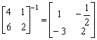
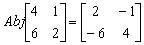

二階矩陣的行列式、逆矩陣及伴隨矩陣
程式可以計算二階矩陣行列式及逆矩陣(預設值)，亦可以計算伴隨矩陣。
程式編寫日期:2006年7月27日
程式 (45 bytes, 使用記憶為A, B, D, X 及 Y)
?→A: ?→B: ?→X: ?→Y: AY - BX→D:
?→D: Y┘D◢ - B┘D◢ - X┘D◢ A┘D
例題1: 計算下列矩陣的行列式及逆矩陣。

按 Prog 1 4 EXE 1 EXE 6 EXE 2 EXE (顯示D?表示行列式為2)
EXE (顯示1) EXE (顯示- 1/2) EXE (顯示 - 3) EXE (顯示2)
因此

例題2: 計算下列矩陣的伴隨矩陣

按 Prog 1 4 EXE 1 EXE 6 EXE 2 EXE (顯示D?表示行列式為2)
1 EXE(輸入1代表計算伴隨矩陣，顯示2) EXE (顯示- 1) EXE (顯示 - 6) EXE (顯示4)
因此
